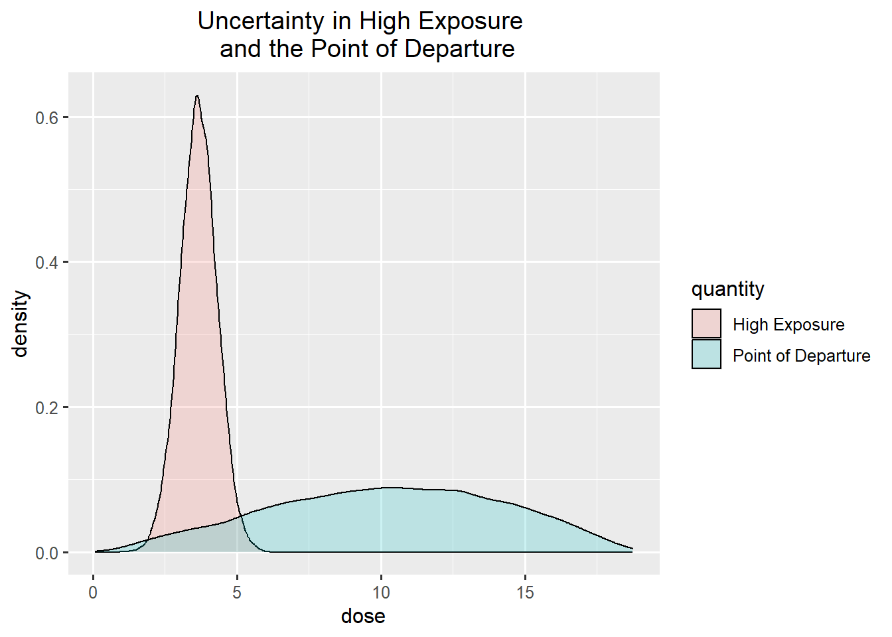
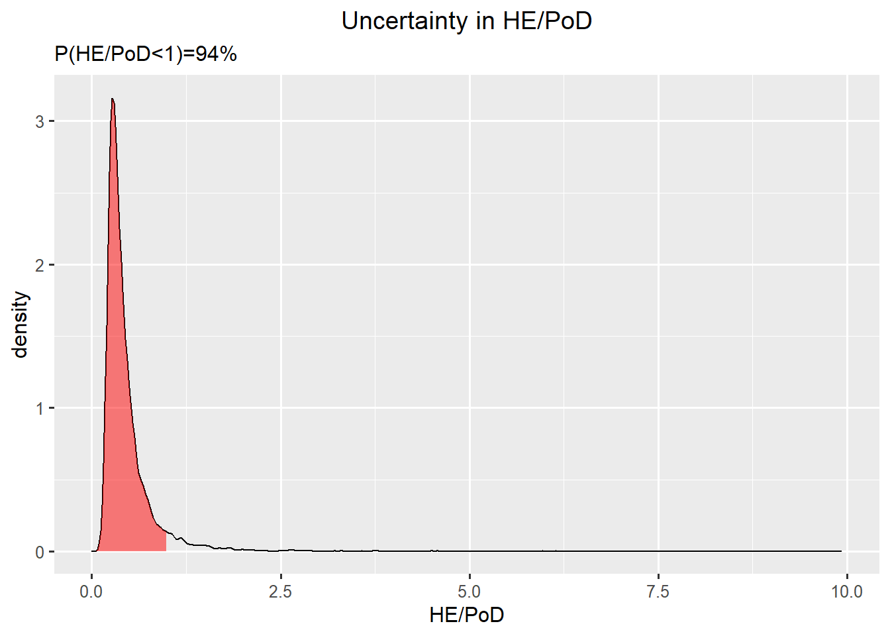

[1] 0.15Tiered approaches to characterise uncertainty in NGRA exemplified with a risk assessment
Work in progress RiskHunt3R
Introduction
Uncertainty characterisation
Uncertainty in an assessment is characterised by
identifying sources of uncertainty and
evaluating their combined impact on the conclusion
A tiered approach to reduce uncertainty
- If practical certainty is not obtained, collect more data
A tiered approach to refine uncertainty
If practical certainty is not obtained, and it is not justified to collect more data, refine the characterisation of uncertainty
Follow options for increased refinement until practical certainty is obtained or stop with an inconclusive assessment
Options to refine the procedure:
Use worst case assumptions and characterise uncertainty in conclusion directly by expert judgement
Break down the assessment into parts, characterise uncertainty in each part, combine by calculations, and make expert judgement considering additional sources of uncertainty
Options to refine the precision:
Start with probability bounds (Numbers) and combine by Probability Bounds Analysis
If applicable, proceed with reducing bounds on probabilities
Otherwise, proceed with specifying full probability distributions and combine by probability calculations or Monte Carlo simulation.
Assessment
Consider a human health risk assessment of chemical \(X\).
Hazard assessment
The quantity of interest for the hazard assessment is the Point of Departure, PoD.
As an example, a PoD of 5.2 μg \(X\)/kg bw per day was identified by the experts as the BMDL from a model average of BMD modelling for a relevant human effect.
Model Averaged BMD model
| BMDL | BMD | BMDU |
|---|---|---|
| 5.2 | 10.1 | 15.8 |
Exposure assessment
The quantity of interest for the exposure assessment is a High Exposure in the target population, HE.
The range (seen over different populations and data sets) of the exposure estimates for \(X\) was assessed as
- 2.8 - 4.5 μg/kg bw per day for a high-level exposure scenario.
Risk characterisation
The question for the risk assessment is if the High Exposure is below the Point of Departure, i.e.
\[HE < PoD\]
The answer to the assessment question is NO HEALTH CONCERN if the ratio \(\frac{HE}{PoD} < 1\).
Note
When the PoD is derived from BMD modelling, a ratio greater than 1 implies that the exposure can be associated with a 5% increase relative to the background incidence for the effect. Note that the value 5% comes from the BMD modelling.
Sources of uncertainty
The first step in an uncertainty analysis is to identify sources of uncertainty related to inputs and methods.
Sources of uncertainty can be summarised as tables with explanations and indications on their influence on the overall uncertainty (qualitative expressions).
Practical certainty
The practical certainty is by risk managers set to be 80% probability to conclude that compound \(X\) is a health concern and 85% probability to conclude that compound \(X\) is not a health concern. The assessment is inconclusive for any uncertainty in between the limits.
It can be sufficient to conclude if uncertainty the conclusion is in the range of practical certainty.
| No health concern | Inconclusive | Yes health concern |
|---|---|---|
| <15% | 15 - 80 | >80% |
or
| Health concern | Inconclusive | No health concern |
|---|---|---|
| <20% | 20 - 85 | >85% |
If not, the assessment should be reported as inconclusive. The risk managers can then decide to support generation of new studies to reduce uncertainty by collecting more data or perform a re-evaluation of the risk assessment with a more refined characterisation of uncertainty.
A tiered approach to evaluate the combined impact of sources of uncertainty on the conclusion
There are several options to evaluate the combined impact of all these sources of uncertainty on the conclusion whether the risk ratio is greater than 1.
A tiered uncertainty analysis can be done in the following steps
Basic option
Refined option with uncertainty expressed by probability bounds
Refined options with uncertainty expressed by probability distributions
In each step, summarise uncertainty in the conclusion as % probability for the more probable outcome.
Check if the % probability for the more probable outcome is in the region of practical certainty.
Tier 1. Basic option
The basic option is to assess the combined impact in a single step using expert judgement. This is done by asking the experts to agree how certain they are as a group that \(\frac{HE}{PoD} < 1\), considering all evidence and all identified (non-standard or standard) sources of uncertainty.
This can be done by reaching a consensus judgement, following procedures for expert knowledge elicitation (using behavioural aggregation to allow for discussions). This judgement requires expertise on both toxicity and exposure assessment.
This judgement is more easy when the conservative estimate for the Highest Exposure (here 4.5) is far below (a conservative value for) the Point of Departure (here 5.2).
Conservative values can be obtained by uncertainty factors. It is preferable to have well-calibrated uncertainty factors as they will result in estimates with known level of conservatism. If not, it is difficult for the experts to judge their uncertainty in the conclusion.
In our example, the expert agree that their uncertainty lies in the inconclusive range. Some of them even said that they could not make this judgement, which would also leed to an inconclusive assessment.
Is practical certainty obtained? No.
We proceed by refining uncertainty
Tier 2. Refined option with probability bounds
A refined approach is useful when there is a small difference between the Point of Departure and the Highest Exposure, when the experts cannot conclude and collecting more data is not possible within the limits of the assessment.
A refined option is to assess uncertainties separately for the PoD and HE, combine them by calculations into a risk ratio and assess uncertainty in the conclusion.
We explore how to do this with probability bound analysis where we offer two approaches:
probabilities first: to elicit quantiles for given probabilities, where the probabilities are chosen to obtain practical certainty
numbers first: to elicit probabilities given numerical values, where the numerical values are chosen so the risk ratio is 1.
Probabilities first
The refined option with probability bounds can be modified to consider practical certainty in the following way. In this example, the risk managers and the experts have agreed that experts must be at least 85% certain that a High Exposure HE is below the PoD in order for risk managers to make a decision.
This means that the assessment is conclusive when the experts are at least 85% certain that the risk ratio is less than one (no health concern).
Subtract the probability threshold for practical certainty from 100% to set an upper bound for the the sum of the lost probabilities.
\[100\% - 85\% = 15\%\]
Divide the resulting probability into two parts, one for the hazard, here \(10\%\), and one for the exposure, what remains \(100-85 - 10 = 5\%\).
Subtract the lost probability for the hazard from 100 to set the probability associated with a conservative estimate of the Point of Departure.
\[100\% - 10\% = 90\%\]
Elicit the conservative estimate of the Point of Departure from the toxicology experts (asking them to consider the identified sources of uncertainty for the hazard assessment). Define the conservative estimate as the quantile \(y\)
\[P(PoD > y) = 90\%\]
Here the expert set \(y = 5.2\).
Subtract the lost probability for exposure from 100, to set the probability associated with the conservative estimate of a High Exposure.
\[100\% - 5\% = 95\%\]
Elicit a conservative estimate of a High Exposure from the exposure experts (asking them to consider the identified sources of uncertainty for the exposure assessment). Define the conservative estimate as the quantile \(x\)
\[P(HE < x) = 95\%\]
In this example, the expert elicit the value \(x = 4.725\).
Divide the conservative estimate for the exposure with the conservative estimate for the hazard \(\frac{x}{y}\).
Practical certainty is obtained if \(\frac{x}{y} < 1\).
In this example, this ratio is \(\frac{4.725}{5.2} = 0.91\)
Hence, practical certainty is reached. Proceed to the decision.
Numbers first
Use a conservative estimate for PoD as starting point and use experts judgement on their uncertainty for that to guide what value to consider for the exposure part.
Ask experts to judge their probability expressing their uncertainty about a conservative estimate of hazard, e.g. the BMDL,
The experts judge that they are 90% certain that the Point of Departure is above 5.2 μg \(X\)/kg bw per day.
\[P(PoD > y) = 90\%\] That implies that the conservative estimate for the hazard is \(y = 5.2\)
| P below | value | P above |
|---|---|---|
| 10% | y | 90% |
Derive the value on the High Exposure where the risk ratio is at the critical threshold
\[\frac{x}{y} = 1\]
This value is \(x = 1 \cdot y = 5.2\)
Ask the experts to judge their probability that a High Exposure is below 5.2 μg \(X\)/kg bw per day. The experts’ elicited probability is 90%.
\[P( HE < x) = 90\%\]
| P below | value | P above |
|---|---|---|
| 90% | x | 10% |
Practical certainty is obtained if \[100 - [(100-P(HE < x)) + (100-P(PoD > y))] \geq 85\] In this example, the left hand side is \(100-[10+10]=100-10 + 10= 80\)
Hence, practical certainty is not reached.
If it is not possible to conclude with high enough certainty, we move on to a refined option for uncertainty analysis with probability distributions or consider reducing uncertainty by collecting more data.
Note
A humble note from Ullrika and Dawei: The numbers and probabilities are chosen for demonstration. There are inconsistencies in the judgements between probability and numbers first in this example. In reality, only one of the options are chosen. Due to this inconsistency, the next tier will not be consistent with this one.
Tier 3. Refined option with probability distributions
A refined option can alternatively be done with probability distributions which are combined by calculations or Monte Carlo simulation.
This is an option, when the outcome of a probability bound analysis was inconclusive.
It can also be an option when the assessors prefers to choose to justify probability distributions for uncertainty from available information, combine uncertainties by performing the probability calculations, and then ask the experts to consider additional sources of uncertainty (not yet accounted for) by making a judgement on the outcome of interest directly.
Note
Note that an explicit elicitation of the outcome of interest following a Monte Carlo simulation is a condition for this approach to result in a characterisation of the experts uncertainty considering the combined impact of all sources of uncertainty in the assessment.
Point of Departure
A probability distribution representing uncertainty in the Point of Departure can be taken from the BMD uncertainty distribution generated by bootstrapping or Bayesian modelling. There are plenty of BMD software available to do this.
We (the assessors) let the BMDL, the BMD, and the BMDU define a lower percentile (10), the median (50), and a higher percentile (90) of the probability distribution for uncertainty in the PoD.
| BMDL | BMD | BMDU |
|---|---|---|
| 10 | 50 | 90 |
| 5.2 | 10.1 | 15.8 |
The lower bound is zero. Since the distribution is skewed to the right, the experts set an upper plausible bound. Here we fit a generalised beta distribution to these quantiles using the SHELF R-package.
#fit <- SHELF::fitdist(vals = c(bmdl,bmd,bmdu),probs = c(0.05, 0.5, 0.95), lower = 0, upper= bmdu*1.2)
SHELF::plotfit(fit,d="beta",xlab="PoD",ylab="probability density")
Tip
An alternative is to go to the online elicitation app for one distribution link to SHELF app and find a probability distribution that matches these quantiles. Note that you have to specify the lower and upper bound of the plausible range. You can get them from studying the sample from BMD modelling. You can find the R-code to generate random numbers from the selected probability distribution in the report that is possible to download from SHELF
The generalised beta-distribution is generalised in the sense that it is not bounded in the interval 0 to 1. It is defined by relating to the standard beta-distribution as
\[\frac{PoD}{18.96} \sim beta(2.58, 2.22)\]
We sample from this distribution using this R-code
sample_PoD <- function(niter){
fit$limits$lower + (fit$limits$upper-fit$limits$lower) * rbeta(n = niter, shape1 = fit$Beta$shape1, shape2 = fit$Beta$shape2)
}
Warning
This approach ignores additional sources of uncertainty than those considered in the model, hence we need to draft how to consider those as well. e.g. by adjusting the specification of the quantiles.
High Exposure
A probability distribution representing uncertainty in the estimates of High Exposure over different surveys can be approximated by using the range of the dietary exposure estimates under the high scenario as bounds of an 80% probability interval. A better option is to use expert knowledge of the probability bounds.
| min HE | max HE |
|---|---|
| P10 | P90 |
| 2.8 | 4.5 |
One choice could be to use a normal distribution to represent uncertainty in a High Exposure. A normal distribution has two parameters, the mean (\(\mu\)) and the standard deviation (\(\sigma\)).
\[HE \sim N(\mu,\sigma)\]
Warning
The normal distributions is not an ideal choice for a non-negative variable. There is no default distribution and it is important that it represents experts uncertainty about a high exposure.
The choice of probability distribution could be guided by more detailed information, paired averages and P95s from different populations groups.
We derive the mean by taking the mid value in the interval:
\[ \mu = \frac{4.5+2.8}{2}= 3.65\]
The standard deviation is specified by considering the formula for a 90% quantile in the normal distributions as a function of the parameters:
\[ P90 = \mu + 1.28\cdot \sigma\]
and rearranging it to be a function of \(\sigma\)
\[ \sigma = \frac{P90 - \mu}{1.28} = \frac{4.5-0.85}{1.28}=0.66\]
Specification of the parameters and draw of random numbers from the normal distribution.
sample_HE <- function(niter){
m = (hel+heu)/2
s = (heu-m)/qnorm(0.9)
he = rnorm(n = niter, mean = m, sd = s)
he[he<0] = 0 # truncate
return(he)
}Calculated risk ratio
Combine sources of uncertainty by calculations
Evaluate the combined impact of the characterised uncertainty in PoD and HE on the risk ratio by Monte Carlo simulation.
niter = 10^4
pod <- sample_PoD(niter)
he <- sample_HE(niter)The distributions for High Exposure and the Point of Departure overlap.

The calculated probability that the risk ratio is below 1 is \[P(\frac{HE}{PoD}<1) = 95 \%\]
This value was derived by calculating the proportion of random samples in your Monte Carlo simulation that corresponds to a ratio < 1.
rr = pod/he
mean(rr<1)Visualisation of uncertainty in the risk ratio
Depending on what is the more probable outcome, there are alternatives to visualise uncertainty in the risk ratio.
Framing as no health concern
This is the preferred option when no health concern is the more probable outcome.

In this visualisation, the red area corresponds to a High Exposure less than the Point of Departure.
Framing as a health concern
Another way is to visualise the resulting distribution for uncertainty in the risk ratio by outcome that there is a health concern.

In this visualisation, the red area corresponds to a High Exposure greater than the Point of Departure.
Consider additional sources of uncertainty
As a final step, the experts are invited to adjust this probability upwards or downwards considering additional sources of uncertainty, not previously taken into account in the analysis.
For the purpose of this exercise we assume that the experts subsequently judged that any additional sources of uncertainty were small enough that there was no need to adjust the calculated % probability that the risk ratio is less than 1.
An additional sources of uncertainty could e.g. be the choice of distributions used in the Monte Carlo simulation and any limitations in the quality of the exposure and toxicity data that are not taken into account in those distributions.
Here the expert judge that their % certainty for no health concern is 95%.
If this value is in the region of practical certainty (i.e. <0.85%) the uncertainty characterisation is completed and one can proceed with decision making.
Conclusions
Bayesian reasoning combined with Probability bounds analysis can be used for categorical as well as continuous quantities.
Probability bounds can be specified by bounded probability, e.g. \(P(PoD > y) < 90\%\) instead of \(P(PoD > y) = 90\%\).
The basic option requires one expert judgement.
The probability bound analysis option requires two expert judgements.
The precise probabilistic option can use information from the probability bound analysis and complement it with at least two more expert judgements.
The probability distributions representing uncertainty in PoD and a High Exposure can be more or less derived from quantitative modelling in which uncertainty within the model is characterised.